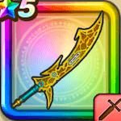

いなずまの剣
攻略班 5.5点 / いなずま斬りメガスラッシュまとい三閃斬り
くわしい特徴
【レベル別習得スキル】 Lv1いなずま斬り（消費MP：3）いなずまを剣に纏わせて斬り敵1体に威力130%のデイン属性斬撃ダメージを与える Lv15メガスラッシュ（消費MP：22）雷のやいばでなぎはらい、敵全体に威力150%のデイン属性斬撃ダメージを与える Lv20メガスラッシュのダメージ+10% Lv30まとい三閃斬り（消費MP：27）敵1体に威力120%のバギ属性斬撃ダメージと威力120%のイオ属性斬撃ダメージと威力120%のデイン属性斬撃ダメージを与える 【限界突破スキル】 1凸スキルの斬撃・体技ダメージ+5% 2凸スキルの斬撃・体技ダメージ+5% 3凸スキルの斬撃・体技ダメージ+5% 4凸スキルの斬撃・体技ダメージ+5%